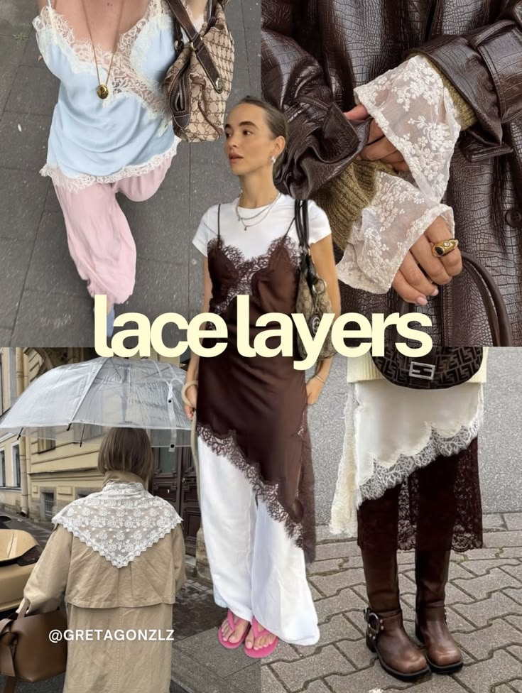

Microtrends e o impacto das redes sociais na identidade pessoal
Por: Giulia Leite

“Quem é você”
Você sabe quem é?
Obviamente essa não é uma pergunta fácil de responder. Até porque, levamos uma vida inteira para nos descobrir, desconstruir e reconstruir de novo a essência e a imagem que temos de nós. Como parte do processo, experimentamos rotinas, trabalhos, artes, roupas, estilos, comidas, para que de alguma formar tentemos nos encontrar no meio de nossas experiências...e isso leva tempo. Ser humano é estar em movimento, a todo tempo.
Com o início das redes sociais, pudemos ter a oportunidade de compartilhar isso com o mundo! Pessoas ao redor do globo postavam suas experiencias, pensamentos, reflexões. E assim, também aprendíamos com os outros.
Porém, com o sucesso ápice das redes sociais, hoje vemos uma nova forma de olhar e consumir essas plataformas. O que antes era um espaço digital para lazer e compartilhar momentos cotidianos, agora se tornou uma feira digital que a todo momento tenta te convencer a consumir e comprar o que é apenas agradável aos seus olhos. A mídia social virou uma disputa com quem tem mais, quem gasta mais e quem usa mais e isso se tornou insuportável.

Microtrends como clean girl, óculos Miumiu, old money, farmcore são alguns nomes que circulam pela internet. Talvez você nunca tenha ouvido falar delas e está tudo bem já que elas são criadas justamente para isso: venderem e durarem pouco. Além de que muitas delas se misturam e venham à tona de uma vez só em um só algoritmo. O algoritmo se tornou mais essencial em nossas escolhas de vestimenta do que nosso próprio pensamento crítico e nesses espaços os usuários acabam escolhendo frequentemente esses “estilos” por aprovação em vez de próprio gosto. Saber verdadeiramente seu estilo é se conhecer para saber o que você se agrada e o porquê disso.
Com o passar do tempo, aquilo que poderia demorar anos para ter um significado na pessoa que você, agora mais do que nunca passa a ser pelos status e pela propaganda. Claro, isso não se significa que você não possa usar aquela jaqueta, tênis ou aquele acessório que bombou – se fossemos desconstruir todas as tendências, aquilo que é o coração da indústria da moda seria destruído totalmente. -, a questão é o motivo que te levar a consumir isso.
Nesse cenário de vitrine virtual, o pensamento crítico se mostra não apenas necessário, mas essencial como uma habilidade prática para a vida. É urgente questionar se estamos escolhendo nossas roupas, acessórios e "identidades" por uma preferência autêntica ou simplesmente buscando validação e aprovação em espaços moldados por algoritmos invisíveis. A verdadeira moda e a formação do nosso 'eu' não deveriam ser ditadas por uma rolagem infinita de tela, mas sim pela compreensão real de quem somos e do que nos faz sentir bem, independentemente do que está "viralizando".
Portanto, ao voltarmos à pergunta inicial — "Quem é você?" —, fica claro que a resposta jamais poderá ser encontrada em uma microtrend passageira ou no fundo de um carrinho de compras online. Construir uma identidade é um trabalho contínuo, interno e profundamente pessoal que exige tempo e vivência. Participar das tendências e consumir moda pode, sim, ser divertido e válido, desde que você seja o protagonista consciente de suas escolhas, e não um refém do algoritmo. Afinal, a estética de hoje inevitavelmente será esquecida amanhã, mas a sua essência é a única coisa que permanecerá quando as telas se apagarem.